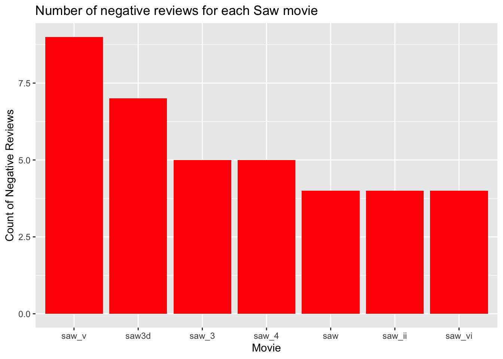

library(purrr)
library(tidyverse)
library(polite)
library(rvest)
library(dplyr)
library(stringr)
library(tibble)
library(tidytext)
library(textdata)
library(wordcloud)
library(wordcloud2)
library(viridis)
library(ggthemes)
library(ggplot2)
library(ggraph)
library(igraph)Mini Project 4
I don’t know if I will end up needing all of these packages, but it’s better to be safe than sorry.
For my mini project, I am going to be looking at Rotten Tomatoes user and critic reviews from the first 7 movies in the Saw franchise. It is pretty much general concensus from fans of the franchise that the quality of films decreases as each movie progresses, so I thought I would see if the reviews on Rotten Tomatoes reflected that.
Note: I am only taking reviews of the first 7 movies because those are the ones that I have seen so far.
saw_url_endings <- c("saw", "saw_ii", "saw_3", "saw_4", "saw_v", "saw_vi", "saw3d")These are the endings for each URL corresponding to each Saw movie. I got these manually from looking at each page for each movie on Rotten Tomatoes. (Interesting how some of them use roman numerals and some use regular numbers).
The first thing that I will do is make sure that I am allowed to scrape data from each url.
check_if_allowed <- function(url_ending) {
url <- paste0("https://www.rottentomatoes.com/m/", url_ending)
robotstxt::paths_allowed(url)
}results <- map(saw_url_endings, check_if_allowed)
www.rottentomatoes.com
www.rottentomatoes.com
www.rottentomatoes.com
www.rottentomatoes.com
www.rottentomatoes.com
www.rottentomatoes.com
www.rottentomatoes.com print(results)[[1]]
[1] TRUE
[[2]]
[1] TRUE
[[3]]
[1] TRUE
[[4]]
[1] TRUE
[[5]]
[1] TRUE
[[6]]
[1] TRUE
[[7]]
[1] TRUEYay! Let’s proceed…
I will create a function that takes a string that represents the ending of the url that is to be added onto the base url for Rotten Tomatoes. Then, we will scrape the review, along with the type of review (critic or user) and the movie in which it is a review for, and put it together in a tibble.
scrape_reviews <- function(url_ending) {
base_url <- "https://www.rottentomatoes.com/m/"
url <- paste0(base_url, url_ending)
movie <- url |>
bow() |>
scrape()
top_reviews_url <- paste0(url, "/reviews?type=top_critics")
top_reviews_page <- top_reviews_url |>
bow() |>
scrape()
top_reviews <- html_nodes(top_reviews_page, ".review-text") |>
html_text() |>
str_trim()
user_reviews_url <- paste0(url, "/reviews?type=user")
user_reviews_page <- user_reviews_url |>
bow() |>
scrape()
user_reviews <- html_nodes(user_reviews_page, ".js-review-text") |>
html_text() |>
str_trim()
reviews <- tibble(
type = c(rep("critic", length(top_reviews)), rep("user", length(user_reviews))),
review = c(str_to_lower(top_reviews), str_to_lower(user_reviews)),
movie = url_ending
)
return(reviews)
}We can use this function by imputing all of the url endings from before into this function to get the corresponding reviews.
all_reviews <- bind_rows(lapply(saw_url_endings, scrape_reviews)) |>
filter(str_trim(review) != "") # removing blank reviewshead(all_reviews)# A tibble: 6 × 3
type review movie
<chr> <chr> <chr>
1 critic the sound of jigsaw's gravely voice pouring out of the tape reco… saw
2 critic how such a cruelly empty and infantile movie got made is mystery… saw
3 critic james wan's horror film saw is full of demented twists and guilt… saw
4 critic [a] contrived, unlovable gore-fest with a high-concept premise. saw
5 critic there's something impressively loathsome and extravagantly twist… saw
6 critic as a study in the macabre, it barely suffices; as a sick and blo… saw Now, we have our data.
The first thing I am curious about is the number of negative reviews for each movie. To determine this, I will ask ChatGPT to generate a list of words that would indicate a negative review for a movie. It gave me several different categories to work with and plenty of words. I put these words into vectors based on the category.
poor_quality <- c(
"boring", "predictable", "dull", "cheap", "lazy",
"unimaginative", "weak", "shallow", "forgettable"
)
plot_criticism <- c(
"confusing", "nonsensical", "contrived", "illogical",
"disjointed", "unrealistic", "forced", "flat"
)
acting_criticism <- c(
"wooden", "unconvincing", "overacted", "stereotypical",
"unlikeable", "forgettable", "clichéd"
)
pacing_criticism <- c(
"slow", "dragging", "tedious", "repetitive", "overdone"
)
horror_criticism <- c(
"not scary", "tame", "gimmicky", "excessive", "gross",
"cheap scares", "too gory", "shock value"
)
negative_sentiment <- c(
"disappointing", "awful", "terrible", "horrible",
"poor", "bad", "waste"
)Combine all of the words together, and create a regular expression.
all_negative_words <- c(
poor_quality, plot_criticism, acting_criticism,
pacing_criticism, horror_criticism, negative_sentiment
)
negative_words_regex <- paste(all_negative_words, collapse = "|")negative_reviews <- all_reviews |>
filter(str_detect(review, negative_words_regex))head(negative_reviews)# A tibble: 6 × 3
type review movie
<chr> <chr> <chr>
1 critic "[a] contrived, unlovable gore-fest with a high-concept premise." saw
2 critic "though dumber than a box of rocks, saw forges ahead with the ki… saw
3 user "this is a good and solid horror film. it is original and clever… saw
4 user "james wan’s saw is a masterpiece in both psychological horror a… saw
5 critic "to enjoy saw ii, one must have enjoyed saw. this is a given. as… saw_…
6 user "this was not bad but the first one was just much better." saw_…Here are all of the negative reviews we gathered.
I am interested to see how many negative reviews each movie has from users and critics.
negative_review_counts <- negative_reviews |>
group_by(movie) |>
summarise(negative_count = n()) |>
arrange(desc(negative_count))
negative_review_counts# A tibble: 7 × 2
movie negative_count
<chr> <int>
1 saw_v 9
2 saw3d 7
3 saw_3 5
4 saw_4 5
5 saw 4
6 saw_ii 4
7 saw_vi 4ggplot(negative_review_counts, aes(x = reorder(movie, -negative_count), y = negative_count)) +
geom_col(fill = "red") +
labs(
title = "Number of negative reviews for each Saw movie",
x = "Movie",
y = "Count of Negative Reviews"
)
Interesting, it looks like Saw V has the most negative reviews out of the seven movies. I am also not surprised to see that Saw 3D is second.
The next thing I want to know the difference between the number of negative critic reviews and negative user reviews. To do this, I want to use bing sentiment analysis.
The first step is to make all_reviews ‘tidy’.
tidy_reviews <- all_reviews |>
mutate(row_id = row_number()) |>
unnest_tokens(word, review, token = "words")Join the bing sentiments tibble with our tidy data to label each uncommon word as either positive or negative.
bing_sentiments <- get_sentiments("bing")
tidy_reviews_bing <- tidy_reviews |>
inner_join(bing_sentiments, by = "word")Determine the average sentiment of each movie.
sentiment_summary <- tidy_reviews_bing |>
mutate(sentiment_value = ifelse(sentiment == "positive", 1, -1)) |>
group_by(movie, type) |>
summarize(avg_sentiment = mean(sentiment_value, na.rm = TRUE)) |>
arrange(desc(avg_sentiment))`summarise()` has grouped output by 'movie'. You can override using the
`.groups` argument.sentiment_summary# A tibble: 14 × 3
# Groups: movie [7]
movie type avg_sentiment
<chr> <chr> <dbl>
1 saw_vi user 0.316
2 saw_v user 0.214
3 saw_ii user 0.176
4 saw_4 user 0.170
5 saw user 0.101
6 saw3d user -0.0976
7 saw_3 user -0.129
8 saw_ii critic -0.175
9 saw3d critic -0.256
10 saw_3 critic -0.281
11 saw_v critic -0.310
12 saw_4 critic -0.463
13 saw critic -0.472
14 saw_vi critic -0.517 By sorting by average sentiment, it is clear that users are speaking better of the entire Saw franchise compared to the critics. The lowest average sentiment from the users was for Saw 3 at -0.129 where the highest average sentiment from the critics was for Saw 2 at -0.1784.
ggplot(sentiment_summary, aes(x = movie, y = avg_sentiment, color = type, group = type)) +
geom_line(size = 1.2) +
geom_point(size = 3) +
theme_minimal() +
labs(
title = "Sentiment across the Saw movies",
x = "Movie",
y = "Average Sentiment",
color = "review type"
) +
scale_x_discrete(limits = c("saw", "saw_ii", "saw_3", "saw_4", "saw_v", "saw_vi", "saw3d"))Warning: Using `size` aesthetic for lines was deprecated in ggplot2 3.4.0.
ℹ Please use `linewidth` instead.This plot shows the average sentiment of critics and users for each Saw movie. The most interesting piece of this to me is how different the average sentiments are between critics and users for Saw 6. Also, it seems that the critics and users received Saw 3D oppositely as well.
I will see what words are commonly used in the reviews.
smart_stopwords <- get_stopwords(source = "smart")
tidy_reviews_count <- tidy_reviews |>
anti_join(smart_stopwords) |>
count(word, movie, sort = TRUE)Joining with `by = join_by(word)`tidy_reviews_count# A tibble: 2,724 × 3
word movie n
<chr> <chr> <int>
1 horror saw 19
2 movie saw3d 16
3 movie saw 14
4 movie saw_vi 14
5 ii saw_ii 13
6 movie saw_v 13
7 3d saw3d 12
8 film saw 11
9 film saw3d 11
10 movie saw_3 11
# ℹ 2,714 more rowstidy_reviews |>
inner_join(bing_sentiments) |>
count(movie, index = row_id, sentiment) |>
pivot_wider(names_from = sentiment, values_from = n, values_fill = 0) |>
mutate(sentiment = positive - negative,
movie = factor(movie, levels = c("saw", "saw_ii", "saw_3", "saw_4", "saw_v", "saw_vi", "saw3d"))) |>
ggplot(aes(x = index, y = sentiment, fill = movie)) +
geom_col(show.legend = FALSE) +
facet_wrap(~movie, ncol = 2, scales = "free_x")Joining with `by = join_by(word)`This plot shows the sentiment of each movie review (critics and users) for each movie individually. In other words, each bar represents one review. It looks like Saw 4 and Saw 3D have the most negative reviews, and it looks like Saw 2 has the most positive reviews.
We can also separate the reviews by type.
tidy_reviews |>
filter(type == "critic") |>
inner_join(bing_sentiments) |>
count(movie, index = row_id, sentiment) |>
pivot_wider(names_from = sentiment, values_from = n, values_fill = 0) |>
mutate(sentiment = positive - negative,
movie = factor(movie, levels = c("saw", "saw_ii", "saw_3", "saw_4", "saw_v", "saw_vi", "saw3d"))) |>
ggplot(aes(x = index, y = sentiment, fill = movie)) +
geom_col(show.legend = FALSE) +
facet_wrap(~movie, ncol = 2, scales = "free_x")Joining with `by = join_by(word)`This plot shows the sentiment of critic reviews for each movie individually.
tidy_reviews |>
filter(type == "user") |>
inner_join(bing_sentiments) |>
count(movie, index = row_id, sentiment) |>
pivot_wider(names_from = sentiment, values_from = n, values_fill = 0) |>
mutate(sentiment = positive - negative,
movie = factor(movie, levels = c("saw", "saw_ii", "saw_3", "saw_4", "saw_v", "saw_vi", "saw3d"))) |>
ggplot(aes(x = index, y = sentiment, fill = movie)) +
geom_col(show.legend = FALSE) +
facet_wrap(~movie, ncol = 2, scales = "free_x")Joining with `by = join_by(word)`This plot shows the sentiment of user reviews for each movie individually.
Just for fun, I wanted to look at the bigrams for all of the reviews.
tidy_reviews_ngram <- all_reviews |>
unnest_tokens(bigram, review, token = "ngrams", n = 2) |>
filter(bigram != "NA")
tidy_reviews_ngram# A tibble: 8,122 × 3
type movie bigram
<chr> <chr> <chr>
1 critic saw the sound
2 critic saw sound of
3 critic saw of jigsaw's
4 critic saw jigsaw's gravely
5 critic saw gravely voice
6 critic saw voice pouring
7 critic saw pouring out
8 critic saw out of
9 critic saw of the
10 critic saw the tape
# ℹ 8,112 more rowsbigrams_filtered <- tidy_reviews_ngram |>
separate(bigram, c("word1", "word2"), sep = " ") |>
filter(!word1 %in% stop_words$word,
!word2 %in% stop_words$word) |>
count(word1, word2, sort = TRUE)# filter for only relatively common combinations
bigram_graph <- bigrams_filtered |>
filter(n > 1) |>
graph_from_data_frame()set.seed(2017)
ggraph(bigram_graph, layout = "fr") +
geom_edge_link() +
geom_node_point() +
geom_node_text(aes(label = name), vjust = 1, hjust = 1)The first thing I see on the graph is Spanish words. I guess I did not consider that some of the reviews could be written in languages other than English.
But, I also see “chester bennington”? From Linkin Park?
str_view(all_reviews$review, "chester")[251] │ probably my least favourite saw movie. although the <chester> bennington scene was awesome. r.i.p. <chester>
[262] │ this .5 is only for hoffman carrying this movie on his back (still the best character after jigsaw himself) and for the late <chester> bennington. the traps and special effects in this movie suck. the car trap is the only decent one. the public execution could've been a cool one, but the acting, reason for punishment, and special effects on the gore just make it cartoonishly bad. hell, two of the traps are just metal rods going into people's bodies and they're back to back, followed by the lamest trap, a hanging. they really just gave up on this movie and relied on the "conclusion to a series" to sell it. the gordon twist was ok i guess, but jfc. no likeable characters except joyce and fucking hoffman, and don't get me started on how unfair joyce's death was. even for this series, that was just cruel. worst movie in the series and it's not even close.So, I looked it up, and Chester Bennington did make a cameo appearance in Saw 3D, which I did not know until doing the project, and I have seen the movie before.